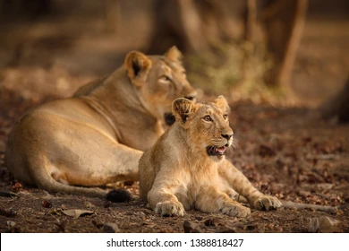

Gir


Gir National Park is the only place in the world outside Africa where a lion can be seen in its natural habitat.
The lions of Gir are a majestic animal, averaging 2.75 metres in length, and with a bigger tail tassle, bushier elbow tufs and prominent belly folds than his African cousin which has larger mane.
Gir is a home to 40 species of mammals and 425 species of birds.
We all know, Gir is the only natural habitat of world popular Asiatic Lions.
Where our tailor made Gir Wild Life Tour Package gives you an unparalleled opportunity to watch those rare Asiatic Lions coupled with thousands of other elusive wild animals and hard-to-find birds like uncommon Asiatic wild ass, hyenas, Gir foxes, pygmy woodpecker, brown fish owl and black buck etc, it will make sure that you receive the highest standards of luxury, comfort and travel.
Additionally, all this is available at very competitive rates.